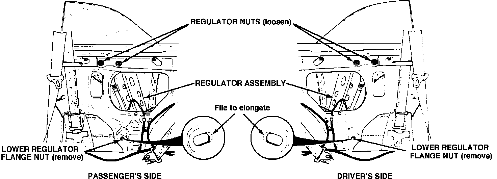

Quarter Window - Water Leak
87acura01July 6, 1987
YEAR MODEL APPLICATION
1987 LEGEND COUPE BODY
87-017
Quarter Window Water Leak
PROBLEM
Water leaks from front top section of the rear quarter window because the window in not properly aligned.

CORRECTIVE ACTION
Elongate the lower bolt hole in the side panel to reposition the window regulator.
1. Lower the rear quarter window half-way.
2. Remove the four bolts fromt he rear seatback as shown on page 20-44 of the Service Manual. Remove the seatback by lifting the seatback up and carefully pulling it forward; taking care not to scratch the seat cushion.
3. Remove the side panel lining.
4. Loosen, but do not remove the 2 upper regulator nuts.
Note: Removing the nuts may make reassembly difficult.
5. Remove the lower regulator flange nut, then push the regulator assembly into the quarter panel to allow clearance for the filing operation.
6. Using a rat tail file, elongate the hole 3 mm toward the rear of the car as shown.
7. Paint the filed area with touch up paint.
8. Fit the regulator assembly back into position. Align the forward edge of the glass so it fits against the center pillar when the window is closed.
9 Reinstall the side panel lining and the seat back.
10. Check for elimination of water leak.
11. Reinstall the side panel lining and the seat back
Note: Be sure the seat belts are in front of the seat back.
WARRANTY CLAIM INFORMATION
Operations number: right side 829122; left side 830122
Flat rate time: one side of car, 0.7 hr.; both sides of car, add 0.4 hr.
Failed P/N: 73500-SGO-000
Defect code: 060
Contention code: B02